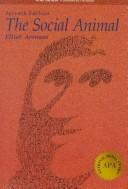

The Social Animal
Book·Elliot Aronson, 1972·社会性动物

From conformity, prejudice and attraction to persuasion, a systematic introduction to social psychology.
- Author
- Elliot Aronson
- Year
- 1972
- Difficulty
- Intermediate
- Kind
- Overview
- Schools
- Conformity and Obedience, Cognitive Dissonance
- Core theories
- Asch Conformity Experiments
Editions
- Chinese edition 《社会性动物》 埃利奥特·阿伦森Elliot Aronson · tr. 邢占军 · 华东师范大学出版社 · 2007 Douban 9.1 (16326 ratings) Douban page ↗
- English edition The Social Animal Elliot Aronson, Joshua Aronson · Twelfth edition, Worth Publishers · 2018 Open Library ↗